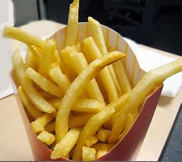

Patatas fritas
Receta de patatas fritas caseras.

Ingredientes
- 3 o 4 patatas (300 g.)
- 4 dientes de ajo
- Aceite de oliva
- Sal
Elaboración (Pasos)
- 1. Pelar y trocear a gusto las patatas
- 2. Calentar aceite en una sarten
- 3. Añadir las patatas, la sal y los ajos
- 4. Freir al gusto
- 5. Servir en un plato